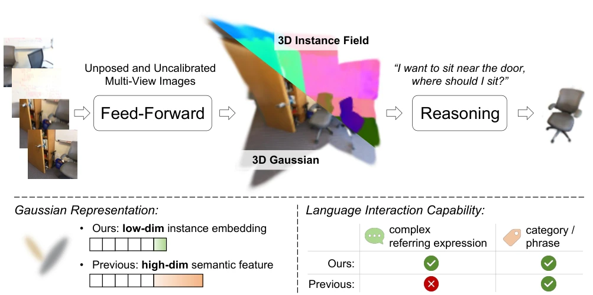
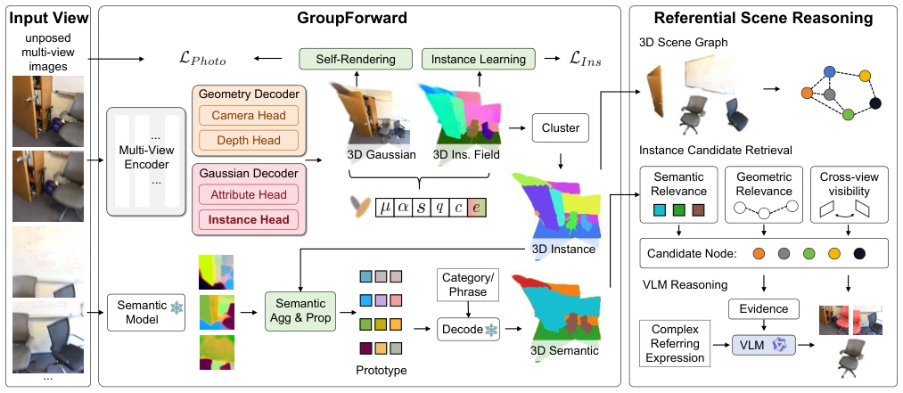
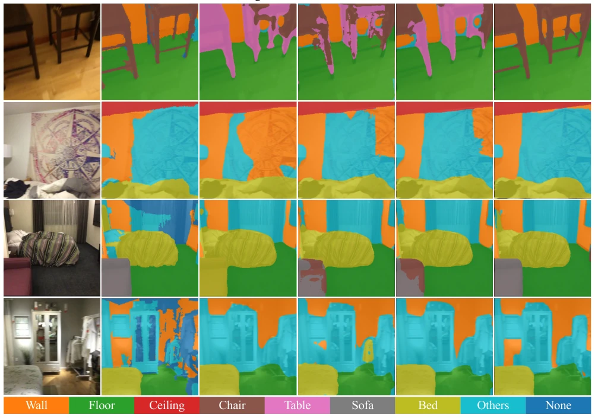
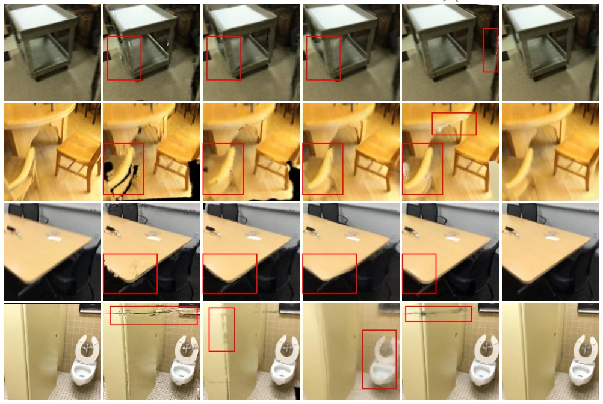
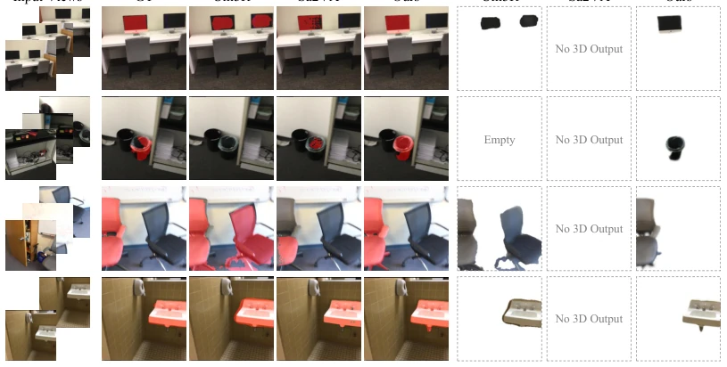

This paper equips 3DGS with an "instance brain", attempting to solve the clumsy problem of existing methods treating each Gaussian point as an independent semantic carrier. GroupForward compresses high-dimensional semantic features into low-dimensional instance embeddings, which counts as slimming down the model, but essentially still relies on 2D semantic models (such as LSeg) to extract features, belonging to "borrowing a chicken to lay an egg". The RSRF framework uses VLM as a judge rather than a generator, this move is clever, saving the trouble of generating masks, but also means it can only pick from existing instances, cannot create something from nothing. Although the performance is good, it relies on SAM2 pseudo-labels and pre-trained semantic models, generalization may still be limited by the ceiling of 2D models, and the reasoning depth for complex scenes still needs verification.
研究动机Motivation
具身智能需要快速构建 3D 场景并理解空间关系。现有的前馈语义 3DGS 方法（如 LSM [7]、Uni3R [8]）虽然高效，但主要将高维语言对齐特征附加到每个高斯原子上。这种设计导致同一类别的多个实例难以区分，且缺乏跨视图的一致性。更致命的是，它们仅支持基于类别或短语的简单查询，无法处理“柜子旁边的垃圾桶”这类复杂指代。这限制了智能体在真实世界中的交互能力，因为自然语言指令往往包含空间关系和上下文约束，需要实例级的结构化表示来支撑推理，而非简单的特征匹配。
Embodied intelligence requires fast construction of 3D scenes and understanding of spatial relationships. Existing feedforward semantic 3DGS methods (such as LSM [7], Uni3R [8]) although efficient, mainly attach high-dimensional language-aligned features to each Gaussian atom. This design leads to difficulty in distinguishing multiple instances of the same category, and lacks cross-view consistency. More fatally, they only support simple queries based on categories or phrases, unable to handle complex references like "the trash can next to the cabinet". This limits the agent's interaction capability in the real world, because natural language instructions often contain spatial relationships and context constraints, requiring instance-level structured representation to support reasoning, rather than simple feature matching.

Fig. 1. The proposed instance-grouped formulation for feed-forward semantic 3D Gaussian Splatting builds referable scenes with low-dimensional instance embeddings rather than attaching high-dimensional semantic features, enabling complex referential reasoning beyond category- or phrase-level queries.
方法Method
整体流程分为 GroupForward 重建和 RSRF 推理。GroupForward 输入稀疏多视图图像，通过实例头预测低维实例嵌入（维度仅 8），将高斯点聚类为跨视图一致的 3D 实例组。语义信息不再逐点存储，而是聚合为实例原型。训练采用三阶段课程学习：先重建几何外观，再训练实例嵌入（含直接损失和渲染一致性损失），最后联合微调。RSRF 构建 3D 场景图，节点为实例，边为空间关系。给定指代表达式，先检索候选实例，再由 VLM 基于结构化证据（语义、几何、多视图观测）进行推理选择，直接输出对应 3D 分割，无需额外 mask 预测。
The overall process is divided into GroupForward reconstruction and RSRF reasoning. GroupForward takes sparse multi-view images as input, predicts low-dimensional instance embeddings (dimension only 8) via instance head, clustering Gaussian points into cross-view consistent 3D instance groups. Semantic information is no longer stored point-by-point, but aggregated into instance prototypes. Training adopts three-stage curriculum learning: first reconstruct geometry appearance, then train instance embeddings (including direct loss and rendering consistency loss), finally joint fine-tuning. RSRF builds 3D scene graph, nodes are instances, edges are spatial relationships. Given a referring expression, first retrieve candidate instances, then VLM reasons and selects based on structured evidence (semantic, geometric, multi-view observations), directly outputting corresponding 3D segmentation, without extra mask prediction.

Fig. 2. Overview of GroupForward and the Referential Scene Reasoning Framework (RSRF). Given sparse, unposed, and uncalibrated multi-view images, GroupForward reconstructs cross-view consistent 3D instance groups with compact instance embeddings and aggregates open-vocabulary semantics at the instance level. RSRF further organizes the instance groups into a 3D scene graph and integrates structured graph evidence with multi-view observations for VLM-based complex referential reasoning and 3D referring segmentation.
Tested on ScanNet benchmark, supports 2 to 16 view inputs, and performs zero-shot generalization on Replica. Comparison baselines include LSM [7], Uni3R [8], etc. Metrics cover mIoU, PSNR, SSIM, etc. GroupForward is superior to existing methods in both semantic reconstruction and view synthesis, mIoU reaches 0.5989. In referring reasoning tasks, RSRF significantly outperforms Uni3R and Sa2VA, capable of handling complex references and outputting consistent 3D results. Ablation studies show that instance embeddings and rendering consistency loss are crucial for semantic performance, curriculum learning improves stability. Additionally, using SAM2 pseudo-labels can also maintain good performance, reducing reliance on annotations.

Fig. 3. Qualitative comparisons of novel-view open-vocabulary segmentation on ScanNet. Our GroupForward produces more complete semantic regions with cleaner object boundaries and fewer cross-category inconsistencies than existing methods.

Fig. 4. Qualitative comparison of novel-view synthesis on ScanNet. Red boxes highlight representative rendering artifacts in competing methods, while our GroupForward better preserves scene structure and fine-grained visual details.

Fig. 5. Qualitative comparisons of referential scene reasoning. Our method correctly grounds target instances with accurate novel-view segmentation and corresponding 3D outputs, while competing methods fail to ground the target instances or lack native 3D outputs.